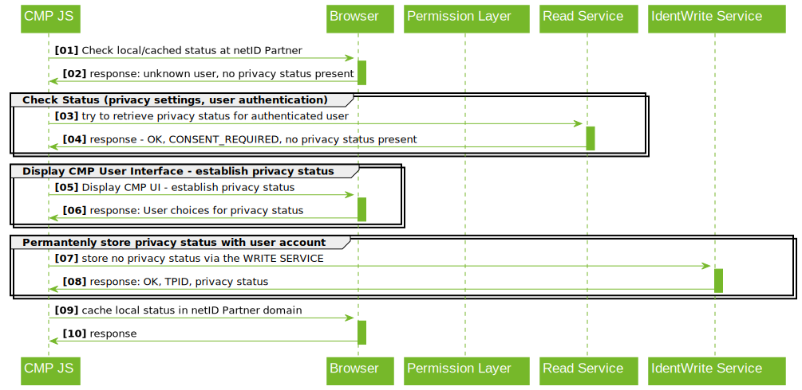

Browser-based API (web browser integration)¶
Description of the browser-based integration of the netID Permission Center by the CMP (integration directly in the user\'s browser (JavaScript)).

Exemplary Procedure for obtaining Consents¶
- JS checks for the presence of a cookie with the TC string in the Publisher domain.
- If there is no TC string present → JS tries to retrieve the TC string from the netID READ SERVICE
- If a TC String exists and permissions suffice → abort and continue processing. Otherwise display overlay for the purpose of obtaining permissions from the user.
- User makes his choice (TCF /identification with netID) via the CMP Interface
- JS writes the TC String via the netID WRITE SERVICE, as well as (if given) the consent for identification via netID.
- JS also writes the TC string as a local cookie in the publisher domain.
Reading the netID Identifier (TPID)¶
If the ORIGIN is eligible, a publisher (TAPP) can retrieve the netID Identifier (TPID) via the following interface:
GET https://READSERVICE.netid.de/identification/tpid?tapp_id=<TAPP_ID>
Accept: application/vnd.netid.identification.tpid-read-v1+json
Cookie: tpid_sec=<JWT_TOKEN>
Origin: <ORIGIN>
200 OK
Content-Type: application/vnd.netid.identification.tpid-read-v1+json
Access-Control-Allow-Origin: <ORIGIN>
Access-Control-Allow-Credentials: true
{
"tpid": "<TPID>|null"
"status": "OK|NO_TPID|TOKEN_ERROR|CONSENT_REQUIRED"
}
JSON Properties¶
| Description | |
|---|---|
| tpid | The ID of the netID user (tpid). Only if consent "Identification" is given, the tpid is present and status "OK". Otherwise null. |
| status | meaning | pid |
|---|---|---|
| OK | Call successful | x |
| NO_TPID | There was no tpid_sec cookie available. | - |
| TOKEN_ERROR | Token (JWT) in the cookie has expired or is invalid. | - |
| CONSENT_REQUIRED | Consent for passing on the TPID missing ("Identification"). | - |
Read permission (TC string)¶
GET https://READSERVICE.netid.de/permissions/iab-permissions?tapp_id=<TAPP_ID>
Accept: application/vnd.netid.permissions.iab-permission-read-v1+json
Cookie: tpid_sec=<JWT_TOKEN>
Origin: <ORIGIN>
200 OK
Content-Type: application/vnd.netid.permissions.iab-permission-read-v1+json
Access-Control-Allow-Origin: <ORIGIN>
Access-Control-Allow-Credentials: true
{
"tpid": "<TPID>|null",
"tc": "<TC string>|null",
"status": "OK|NO_TPID|TOKEN_ERROR|CONSENT_REQUIRED"
}
JSON Properties¶
| Description | |
|---|---|
| tpid | The ID of the netID user (tpid). Only if consent "Identification" is given, the tpid is present and status "OK". Otherwise null. |
| tc | The TC string stored for this tpid for this publisher (TCF 2.0). Only with status "OK". Otherwise null. |
| status | meaning | tc | pid |
|---|---|---|---|
| OK | Status successfully retrieved | x | x |
| NO_TPID | There was no tpid_sec cookie available. | - | - |
| TOKEN_ERROR | Token (JWT) in the cookie has expired or is invalid. | - | - |
| CONSENT_REQUIRED | Consent for passing on the TPID missing ("Identification"). | x | - |
Write permission (TC string)¶
POST https://WRITESERVICE.netid.de/permissions/iab-permissions?tapp_id=<TAPP_ID>
Content-Type: application/vnd.netid.permissions.iab-permission-write-v1+json
Cookie: tpid_sec=<JWT_TOKEN>
Origin: <ORIGIN>
{
"identification": "true|false",
"tc": "<TC string>"
}
201 CREATED
Location: https://READSERVICE.netid.de/permissions/iab-permissions?tapp_id=<TAPP_ID>
Access-Control-Allow-Origin: <ORIGIN>
Access-Control-Allow-Credentials: true
{
"tpid": "<TPID>|null",
"status": "OK|NO_TPID|TOKEN_ERROR"
}
Remarks:
-
If permission "identification" has been given by the user, this must be signaled by passing "identification: true". For the avoidance of doubt, this of course requires the prior collection of this consent by the CMP.
-
If only the TC string is to be updated and the permission "Identification" already exists, only the "tc" attribute can be passed. Both can also be written at the same time.
-
In case of revocation of permission "Identification", would pass only "identification: false".
JSON Properties¶
request
| Description | |
|---|---|
| identification | The permission "Identification" (ID CONSENT) is to be stored (or revoked). |
| tc | The TC String which should be stored for this tpid` for this publisher (TCF 2.0). |
response
| Description | |
|---|---|
| tpid | The ID of the netID user (tpid). Only if consent "Identification" is given, the tpid is present and status "OK". Otherwise zero. |
| status | meaning |
|---|---|
| OK | TC String / ID CONSENT was saved. |
| NO_TPID | There was no tpid_sec cookie available. |
| TOKEN_ERROR | Token (JWT) in the cookie has expired or is invalid. |